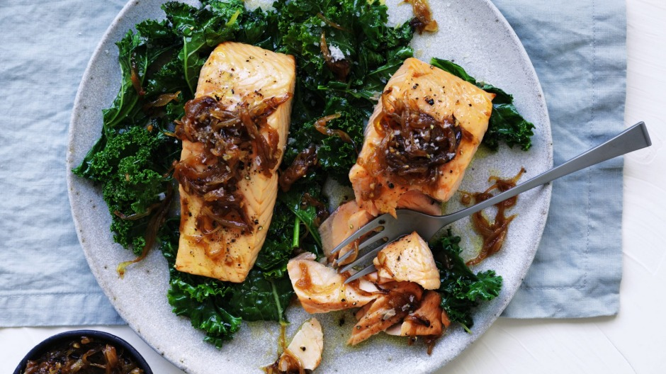

Salmon fillets with caramelised onion and wilted greens
Adam Liaw

Fish cooks fast, so it makes a perfect quick dinner. Balance that with some slow-cooked caramelised onions and it won't look like something you've just thrown together at the last minute.
Ingredients
- 4 tbsp extra virgin olive oil
- 2 brown onions, peeled and finely chopped
- 4 cloves garlic, peeled and finely chopped
- 1 tbsp soy sauce
- a pinch of sugar
- juice of 1/2 a lemon
- 2 x 250g salmon fillets
- salt and black pepper, to season
- 1 bag (about 6 cups) mixed greens (baby spinach, watercress, kale, rocket etc.)
Method
- Heat 2 tbsp of the olive oil in a small saucepan over low-medium heat and add the onions and garlic. Stir to coat in the oil and cook for about 20-30 minutes, stirring occasionally until the onions are caramelised.
- Add the soy sauce, sugar and lemon juice and stir to combine. Set aside until ready to serve.
- Heat your overhead grill to very hot. Place the salmon fillets skin-side down on a piece of baking paper and season with salt and pepper. Grill for about 8 minutes until cooked through. You don't need to turn the fillets.
- While the salmon is cooking heat the remaining oil in a frying pan over high heat. Add the greens and season further with salt and pepper, toss until the greens are wilted and then transfer them to a plate.
- Remove the salmon fillets from the baking paper (the skin will stay stuck to the paper) and place them on the greens. Spoon the onion mixture over the fillets and greens and serve.
Like the recipe? Start shopping!